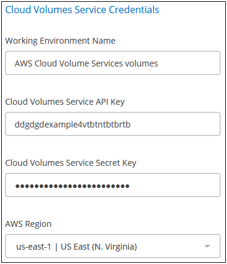
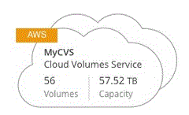
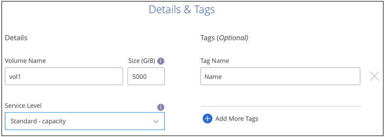
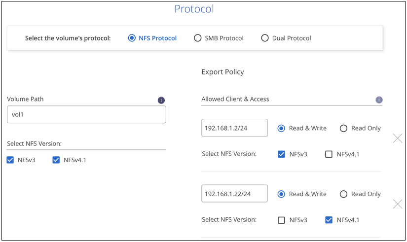
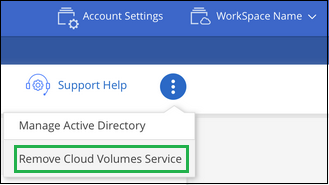

请求文档变更
请求文档变更 在 GitHub 上编辑
在 GitHub 上编辑 提供者指南
提供者指南管理适用于 AWS 的 Cloud Volumes Service
提供者
您可以通过 Cloud Manager 基于创建云卷 "适用于 AWS 的 Cloud Volumes Service" 订阅。您还可以通过 Cloud Volumes Service 界面发现已创建的云卷，并将其添加到工作环境中。
添加 Cloud Volumes Service for AWS 订阅
无论您是已从 Cloud Volumes Service 用户界面创建卷，还是刚刚注册了适用于 AWS 的 Cloud Volumes Service 且尚未创建卷，第一步都是根据您的 AWS 订阅为卷创建一个工作环境。
如果此订阅已存在云卷，则这些卷会自动添加到新的工作环境中。如果您尚未为 AWS 订阅添加任何云卷，请在创建新的工作环境后执行此操作。

|
如果您的订阅和卷位于多个 AWS 区域，则需要对每个区域执行此任务。 |
在每个地区添加订阅时，您必须具有以下信息：
-
Cloud Volumes API 密钥和机密密钥： "要获取此信息，请参见 Cloud Volumes Service for AWS 文档"。
-
创建订阅的 AWS 区域。
-
在 Cloud Manager 中，添加一个新的工作环境，选择位置 * Amazon Web Services* ，然后单击 * 继续 * 。
-
选择 * Cloud Volumes Service * 并单击 * 继续 * 。

-
提供有关 Cloud Volumes Service 订阅的信息：
-
输入要使用的工作环境名称。
-
输入 Cloud Volumes Service API 密钥和机密密钥。
-
选择云卷所在的 AWS 区域或要部署这些卷的位置。
-
单击 * 添加 * 。

-
Cloud Manager 会在 " 工作环境 " 页面上显示您的 Cloud Volumes Service for AWS 配置。

如果此订阅已存在云卷，则这些卷会自动添加到新的工作环境中，如屏幕截图所示。您可以从 Cloud Manager 添加其他云卷。
如果此订阅不存在任何云卷，则可以立即创建它们。
创建云卷
对于已在 Cloud Volumes Service 工作环境中存在卷的配置，您可以使用以下步骤添加新卷。
对于不存在卷的配置，您可以在设置 Cloud Volumes Service for AWS 订阅后直接从 Cloud Manager 创建第一个卷。过去，必须直接在 Cloud Volumes Service 用户界面中创建第一个卷。
-
如果要在 AWS 中使用 SMB 、则必须设置 DNS 和 Active Directory 。
-
在计划创建 SMB 卷时，您必须具有可连接到的 Windows Active Directory 服务器。您将在创建卷时输入此信息。此外，请确保管理员用户能够在指定的组织单位（ OU ）路径中创建计算机帐户。
-
在新的区域 / 工作环境中创建第一个卷时，需要以下信息：
-
AWS 帐户 ID ：一个 12 位数的 Amazon 帐户标识符，不带短划线。要查找您的帐户 ID ，请参见此部分 "AWS 主题"。
-
无类域间路由（ CIDR ）块：未使用的 IPv4 CIDR 块。网络前缀必须介于 /16 和 /28 之间，并且还必须位于为专用网络预留的范围内（ RFC 1918 ）。请勿选择与您的 VPC CIDR 分配重叠的网络。
-
-
选择新的工作环境，然后单击 * 添加新卷 * 。
-
如果要将第一个卷添加到该区域的工作环境中，则必须添加 AWS 网络信息。
-
输入区域的 IPv4 范围（ CIDR ）。
-
输入 12 位 AWS 帐户 ID （不带短划线），将 Cloud Volumes 帐户连接到 AWS 帐户。
-
单击 * 继续 * 。

-
-
" 接受虚拟接口 " 页面介绍了在添加卷之后需要执行的一些步骤，以便您可以完成该步骤。只需再次单击 * 继续 * 即可。
-
在详细信息和标记页面中，输入有关卷的详细信息：
-
输入卷的名称。
-
指定一个介于 100 GiB 到 90 ， 000 GiB 范围内的大小（相当于 88 TiB ）。
-
指定服务级别：标准，高级或极速。
-
根据需要输入一个或多个标记名称以对卷进行分类。
-
单击 * 继续 * 。

-
-
在协议页面中，选择 NFS ， SMB 或双协议，然后定义详细信息。NFS 和 SMB 所需的条目将在下面的不同部分中显示。
-
在卷路径字段中，指定挂载卷时将看到的卷导出的名称。
-
如果选择双协议，则可以通过选择 NTFS 或 UNIX 来选择安全模式。安全模式会影响所使用的文件权限类型以及如何修改权限。
-
UNIX 使用 NFSv3 模式位，只有 NFS 客户端可以修改权限。
-
NTFS 使用 NTFS ACL ，只有 SMB 客户端可以修改权限。
-
-
对于 NFS ：
-
在 NFS 版本字段中，根据您的要求选择 NFSv3 和 / 或 NFSv4.1 。
-
或者，您也可以创建导出策略来确定可以访问卷的客户端。指定：
-
使用 IP 地址或无类别域间路由（ CIDR ）允许的客户端。
-
访问权限为 " 读写 " 或 " 只读 " 。
-
用户使用的访问协议（如果卷同时允许 NFSv3 和 NFSv4.1 访问，则为协议）。
-
如果要定义其他导出策略规则，请单击 * + 添加导出策略规则 * 。
下图显示了已填写 NFS 协议的卷页面：
-

-
-
对于 SMB ：
-
您可以通过选中 SMB 协议加密复选框来启用 SMB 会话加密。
-
您可以通过填写 Active Directory 部分中的字段将卷与现有 Windows Active Directory 服务器集成：
字段 Description DNS 主 IP 地址
为 SMB 服务器提供名称解析的 DNS 服务器的 IP 地址。引用多个服务器时，请使用逗号分隔 IP 地址，例如 172.31.25.223 ， 172.31.2.74 。
要加入的 Active Directory 域
您希望 SMB 服务器加入的 Active Directory （ AD ）域的 FQDN 。使用 AWS Managed Microsoft AD 时，请使用 "Directory DNS name" 字段中的值。
SMB 服务器 NetBIOS 名称
要创建的 SMB 服务器的 NetBIOS 名称。
授权加入域的凭据
具有足够权限将计算机添加到 AD 域中指定组织单位 (OU) 的 Windows 帐户的名称和密码。
组织单位
AD 域中要与 SMB 服务器关联的组织单元。默认值为 CN=Computers ，用于连接到您自己的 Windows Active Directory 服务器。如果将 AWS 托管 Microsoft AD 配置为 Cloud Volumes Service 的 AD 服务器，则应在此字段中输入 * OU=Computers ， OU=corp* 。
下图显示了已填写 SMB 协议的卷页面：

您应按照 AWS 安全组设置指南进行操作，以使云卷能够正确地与 Windows Active Directory 服务器集成。请参见 "适用于 Windows AD 服务器的 AWS 安全组设置" 有关详细信息 … -
-
在 "Volume from Snapshot" 页面中，如果要基于现有卷的快照创建此卷，请从 "Snapshot Name" 下拉列表中选择此快照。
-
在 "Snapshot 策略 " 页面中，您可以启用 Cloud Volumes Service 以根据计划为卷创建 Snapshot 副本。您可以现在执行此操作，也可以稍后编辑卷以定义快照策略。
请参见 "创建快照策略" 有关快照功能的详细信息。
-
单击 * 添加卷 * 。
此时，新卷将添加到工作环境中。
如果这是在此 AWS 订阅中创建的第一个卷，则需要启动 AWS 管理控制台以接受此 AWS 区域将使用的两个虚拟接口来连接所有云卷。请参见 "《 NetApp Cloud Volumes Service for AWS 帐户设置指南》" 了解详细信息。
单击 * 添加卷 * 按钮后，您必须在 10 分钟内接受这些接口，否则系统可能会超时。如果发生这种情况，请发送电子邮件至 cvs-support@netapp.com ，并附上您的 AWS 客户 ID 和 NetApp 序列号。支持部门将修复问题描述，您可以重新启动入职流程。
然后继续 "挂载云卷"。
挂载云卷
您可以将云卷挂载到 AWS 实例。云卷当前支持适用于 Linux 和 UNIX 客户端的 NFSv3 和 NFSv4.1 ，以及适用于 Windows 客户端的 SMB 3.0 和 3.1.1 。
-
注意： * 请使用客户端支持的突出显示的协议 / 拨号。
-
打开工作环境。
-
将鼠标悬停在卷上，然后单击 * 挂载卷 * 。
NFS 和 SMB 卷会显示该协议的挂载说明。双协议卷提供两组指令。
-
将鼠标悬停在命令上并将其复制到剪贴板，以简化此过程。只需在命令末尾添加目标目录 / 挂载点即可。
-
NFS 示例： *

rsize和wsize选项定义的最大 I/O 大小为 1048576 ，但对于大多数使用情形，建议使用的默认值为 65536 。请注意，除非使用
veRS=<NFS_version>选项指定版本，否则 Linux 客户端将默认使用 NFSv4.1 。 -
SMB 示例： *

-
-
使用 SSH 或 RDP 客户端连接到 Amazon Elastic Compute Cloud （ EC2 ）实例，然后按照实例的挂载说明进行操作。
完成挂载说明中的步骤后，您已成功将云卷挂载到 AWS 实例。
管理现有卷
您可以根据存储需求的变化管理现有卷。您可以查看，编辑，还原和删除卷。
-
打开工作环境。
-
将鼠标悬停在卷上。

-
管理卷：
任务 Action 查看有关卷的信息
选择一个卷，然后单击 * 信息 * 。
编辑卷（包括快照策略）
-
选择一个卷，然后单击 * 编辑 * 。
-
修改卷的属性，然后单击 * 更新 * 。
获取 nfs 或 smb mount 命令
-
选择一个卷，然后单击 * 挂载此卷 * 。
-
单击 * 复制 * 以复制命令。
按需创建 Snapshot 副本
-
选择一个卷，然后单击 * 创建 Snapshot 副本 * 。
-
根据需要更改快照名称，然后单击 * 创建 * 。
将卷替换为 Snapshot 副本的内容
-
选择一个卷，然后单击 * 将卷还原到 Snapshot* 。
-
选择一个 Snapshot 副本，然后单击 * 还原 * 。
删除 Snapshot 副本
-
选择一个卷，然后单击 * 删除 Snapshot 副本 * 。
-
选择要删除的 Snapshot 副本，然后单击 * 删除 * 。
-
再次单击 * 删除 * 进行确认。
删除卷
-
从所有客户端卸载卷：
-
在 Linux 客户端上，使用
umount命令。 -
在 Windows 客户端上，单击 * 断开网络驱动器 * 。
-
-
选择一个卷，然后单击 * 删除 * 。
-
再次单击 * 删除 * 进行确认。
-
从 Cloud Manager 中删除 Cloud Volumes Service
您可以从 Cloud Manager 中删除 Cloud Volumes Service for AWS 订阅以及所有现有卷。这些卷不会被删除，而是刚刚从 Cloud Manager 界面中删除。
-
打开工作环境。

-
单击
 按钮，然后单击 * 删除 Cloud Volumes Service * 。
按钮，然后单击 * 删除 Cloud Volumes Service * 。 -
在确认对话框中，单击 * 删除 * 。
管理 Active Directory 配置
如果更改 DNS 服务器或 Active Directory 域，则需要在 Cloud Volumes Services 中修改 SMB 服务器，以便它可以继续为客户端提供存储。
如果不再需要 Active Directory ，也可以删除它的链接。
-
打开工作环境。
-
单击
按钮，然后单击 * 管理 Active Directory* 。 -
如果未配置 Active Directory ，则可以立即添加一个。如果配置了一个，则可以使用修改设置或将其删除
按钮。 -
指定要加入的 Active Directory 的设置：
字段 Description DNS 主 IP 地址
为 SMB 服务器提供名称解析的 DNS 服务器的 IP 地址。引用多个服务器时，请使用逗号分隔 IP 地址，例如 172.31.25.223 ， 172.31.2.74 。
要加入的 Active Directory 域
您希望 SMB 服务器加入的 Active Directory （ AD ）域的 FQDN 。使用 AWS Managed Microsoft AD 时，请使用 "Directory DNS name" 字段中的值。
SMB 服务器 NetBIOS 名称
要创建的 SMB 服务器的 NetBIOS 名称。
授权加入域的凭据
具有足够权限将计算机添加到 AD 域中指定组织单位 (OU) 的 Windows 帐户的名称和密码。
组织单位
AD 域中要与 SMB 服务器关联的组织单元。默认值为 CN=Computers ，用于连接到您自己的 Windows Active Directory 服务器。如果将 AWS 托管 Microsoft AD 配置为 Cloud Volumes Service 的 AD 服务器，则应在此字段中输入 * OU=Computers ， OU=corp* 。
-
单击 * 保存 * 以保存设置。